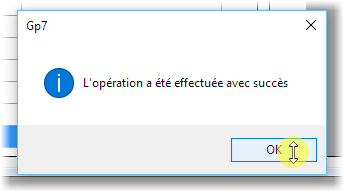

Pour commencer¶
Premier lancement¶
Au premier lancement, si il y’a aucun membre dans le groupe Administrateurs, Gp7 vous demande d’insérer l’utilisateur courant comme membre du groupe Administrateurs de l’application.
NB: Tous les utilisateurs doivent faire exister dans l’Active Directory.
Cliquez sur Oui [Yes] pour ajouter l’utilisateur courant comme dans le groupe Adminsitrateurs de l’application.
Après insertion, la fenêtre ci-dessous s’affiche en vous invitant à sélectionner une année académique.
Déroulez la liste pour pouvoir sélectionner l’année académique sur laquelle vous voulez travailler.
Chaine de connexion¶
Pour modifier ou tester la connexion vers le serveur de base de données, allez dans le menu Outils puis Chaine de connexion.
{kind=link}
Informations sur l’établissement ou institution¶
Pour rentrer des informations sur l’établissement, allez dans le menu Outils puis Paramètres sur l’établissement.
{kind=link}
Gestion des utilisateurs et de droits d’accès¶
Allez dans le menu Outils -> Gestion des utilisateurs
La fenêtre qui suit permet de définir les groupes d’utilisateurs; par défaut, deux groupes sont déjà créés : ADMINS et SUPERUSERS.
{kind=link}
Pour ajouter un groupe, cliquez sur Ajouter, saisissez le Code, le Libellé et la Déscription du groupe puis cliquez sur Enregistrer. Validez OK au message de l’assistant
{kind=link}
Pour gérer un groupe, sélectionnez un groupe puis cliquez sur Gérer. La fenêtre qui apparait permet de définir les utilisateurs, les entités et les rôles du groupes.
{kind=link}
Pour ajouter un utilisateur, allez dans l’onglet Utilisateur puis cliquez sur Ajouter. Saisissez le samaccoutname d’un utilisateur AD puis cliquez sur Rechercher. Si l’utilisateur existe dans l’AD, son nom complet apparait dans le champs situé plus bas. Cliquez sur Enregistrer pour valider et l’ajouter dans comme membre du groupe.
NB: Tous les utilisateurs doivent faire exister dans l’Active Directory.
{kind=link}
Dans l’onglet Entités, Cochez l’entité ou les entités sur lesquelles ce groupe pourra travailler.
Dans l’onglet Droit d’accès, sélectionnez cochez les différents que vous voulez attribuez aux membres de ce groupe
Pays et nationalités¶
Cette fonctionnalité permet de gérer les pays et les nationalités.
Allez dans le menu Outils et puis cliquez sur le sous-menu Pays.
La fenêtre suivante apparaît.
{kind=link}
Ajouter un élement¶
Cliquez sur le bouton Ajouter dans la fenêtre précedente.
La fenêtre d’édition apparait.
Remplissez les différentes champs et puis cliquez sur Enregistrer.
Une fenêtre apparait pour indiquer si l’opération a reussi ou pas.
{kind=link}
Les différents champs à remplir :
- Désignation : Nom officiel d’un pays
- Nationalité : Gentilé des habibants
- Code : ( Il est recommandé d’utiliser le Code à 3 lettres (ISO 3166-1 alpha-3))
NB: Cocher pour rendre cet élement comme élement par défaut
Modifier un élement¶
Sélectionnez un élement et puis cliquez sur le bouton Modifier ou double-cliquer un élement.
La fenêtre d’édition apparait.
Modifiez les champs voulus et puis cliquez sur le bouton Enregistrer.
Une fenêtre apparait pour indiquer si l’opération a reussi ou pas.

{kind=link}
Supprimer un élement¶
- Sélectionnez un élement et cliquez sur le bouton Supprimer.
- Un message de confirmation apparait. Cliquez sur Oui pour confirmer l’opération
Avertissement
La suppression d’un pays ou d’une nationalité implique qu’il (ou elle) ne sera plus référencé(e).